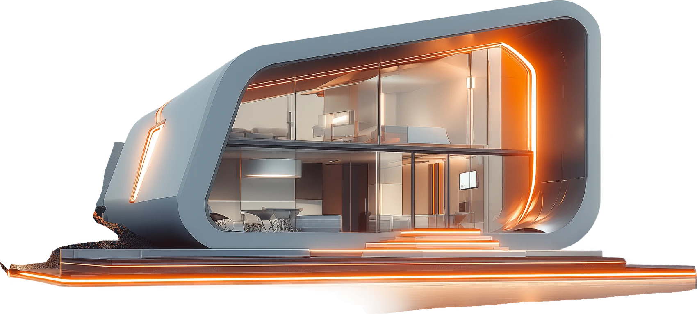

ÉLAN

Figma file me koi animation data nahi tha (static frame), ye motion code me banaya gaya hai. Har effect alag toggle hai — jo pasand aayen wo site par lagayenge.
waiting for first frame…
Sirf transform aur opacity animate hote hain, is liye mobile par bhi 60fps.
Jis user ne OS me "reduce motion" on kiya ho, uske liye animations khud band ho jati hain.
Scroll parallax dekhne ke liye neeche scroll karein.